Software
Engineering
✦ Vienna, Austria · April 2026
Online week
Deliverables
- LASR Cards
- Functional Requirements
- Component Diagram
Why
We were assigned the LASR card exercise on day one as a way to align on quality attributes before making any architecture decisions. I had no idea what LASR cards were going in, so it was all new to me.
How
We went through the cards as a group, debating each one against our project context, the Humber Arboretum dashboard and field app. I contributed by thinking along and arguing for what made sense from a user perspective.
What
We landed on Usability, Functional Suitability, Scalability, Cost Efficiency, and Compatibility as our top 5:
- Usability — we have two very different user groups, sustainability staff and regular visitors. If the system isn't easy to use neither group will actually use it.
- Functional Suitability — the system needs to actually do what it promises. For an ecological monitoring tool that feeds into ESG reports the data and features need to be correct.
- Scalability — the Humber Office mentioned they want the system to grow and eventually be maintained by their own staff. So it can't be something overly complex that only a developer team can touch.
- Cost Efficiency — they also flagged low cost as a requirement. University sustainability office, not a startup with funding. The system needs to be affordable to run and scale.
- Compatibility — the dashboard needs to work on desktop, the field app on mobile, and the system may need to connect with tools the Humber Office already uses.
Things like Reliability and Safety ended up lower, not because they don't matter, but they weren't the priority for our context.
After picking our top 5 we didn't just leave them as card titles either. We deepened each one into a proper definition with concrete measurements and priorities. So Usability for example became something specific like the interface needing to meet WCAG 2.1 standards and users being able to onboard within 2 minutes. The full quality attribute breakdown is included as a supporting document.

So What
The architecture lecture that followed went mostly over my head, but the baseline I took from it was that it's kind of like design, there's a structure to the decisions you make, it's just written in a language I don't speak yet. And honestly? I might never speak it. But understanding that software architecture follows similar patterns of intentional decision making as design is enough for me to keep up and contribute where I'm capable of this module.
Why
This was part of our first week assignment. Before we could build anything, I needed to understand how our users translated into actual system requirements. The personas we worked on together during HCD were already there, so now it was about figuring out what the system actually needed to do for each of them.
How
The team worked through the requirements together but the developers took the lead since they had the knowledge to know what was technically feasible. I was there during the decision making and contributed where I could, mostly from a user perspective since that is my domain.
What
We ended up with three functional requirements linked directly to our personas. The Busy Visitor needed an interactive map of the arboretum with labelled landscape elements filterable by category. The Sustainability Pro needed a real-time metrics dashboard with export and filtering options. The Nature Visitor needed an observation logger where they could submit geo-tagged observations including species, photos and notes that feed into the ecological database.
So What
What I found interesting was seeing how directly the personas translated into features. It connected the HCD work we did in Eindhoven to the software decisions being made here in Vienna, which made it feel less like two separate worlds.

Why
After aligning on our quality attributes, the next step was figuring out how the system would actually be structured. The developers on the team took the lead on this one (again).
How
The developers put together a component diagram showing how all the pieces of our system connect. I contributed by following along and agreeing on the direction, honestly this was more their territory than mine.
What
The diagram shows two frontends, the HOoS Dashboard as a web app and the Mobile App, both connecting to a backend RESTful service via REST API and HTTPS. The backend, likely Supabase, handles three databases: one for entries, one for user data, and one for image storage. There is also a separate server that runs AI models for anomaly classification. The team went with REST API and Supabase specifically because some members had worked with them before and it was the most straightforward option for the team.
So What
Looking at it now I can see it is a client server, component based setup. Not a full monolith, not microservices, somewhere in between which the lecture said is pretty normal for real systems.

Week 3
Deliverables
- Brand Assets
- Mobile
- Setup and First Commits
- ORM – Object Relational Mapping
Why
Before anyone could build anything that looked like Terra, the assets needed to exist in the codebase. Without them every teammate would be working from different versions of the logo or recreating things from scratch.
How
I first created the logos in Adobe Illustrator and then exported them as both PNG and SVG to keep them clean and scalable at any size (Still a designer). I then added them directly to the shared UI package so they could be imported by any part of the project, the mobile app, the web dashboard and anything built on top of it in the future.
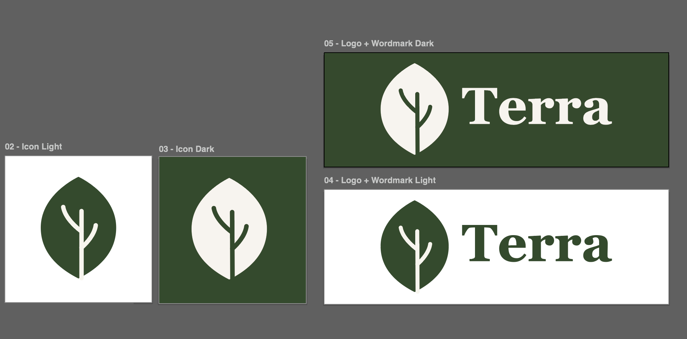
What
What I added to packages/ui/assets/:
- Icon in dark and light variants, in both SVG and PNG
- Logo and wordmark in dark and light variants, in both SVG and PNG
- Leaf icon in both SVG and PNG
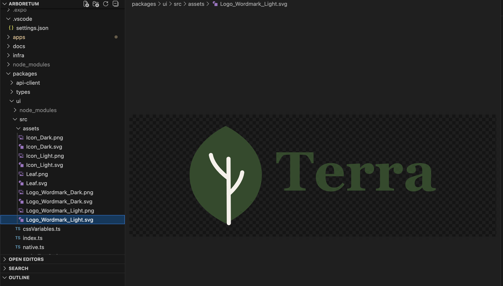
So What
Having these in the shared package meant my teammates could just import them directly wherever they needed them. It made the project feel like a real app from the start, something with an actual identity rather than just a collection of screens, and gave everyone a consistent visual foundation to build from cohesively.
Why
Since I designed the mobile screen I wanted to start by actually contributing something to it in code. Starting with the navigation bar felt like the right first step. It was also my way of getting back into working with Git in a team setting since I had only done it once before almost two years ago. Creating a feature branch, making commits and pushing without breaking my teammates' work was something I was genuinely scared of at first. The navbar was a safe way to ease into it.
How
I worked in React Native and implemented the navbar directly on the map screen. Since it is similar to JavaScript, I could manage by just knowing the structure.
What
I replaced a basic back button with a floating pill shaped search bar overlay that sits on top of the map. It included:

Before

After
- A branded leaf icon button in Terra's dark green #2E4A2A that navigates back to the home screen
- A search input for species and zones
- A profile button
- All styled with rounded corners and a subtle drop shadow so it floats cleanly over the map tiles
At this stage the mobile work was purely frontend with no backend connected yet.
So What
Since the mobile UI and logic was tasked to Mats, my contribution on the mobile side was focused on the frontend UI of the map screen navigation. I worked in React Native to build the navbar and later moved my focus to the dashboard where I could contribute more.
It was a small but visible contribution and, like I already mentioned, I just wanted to have contributed and start to get the hang of coding and working with Git again. It was small, but to me, a designer who hasn't really touched code in a while, it felt big, even if it was only visual code.
Technology Choice: React Native
For the mobile application, we evaluated several cross-platform and native frameworks before settling on React Native.
Alternatives considered:
- Native (Swift / Kotlin) — would deliver the best performance but requires maintaining two entirely separate codebases for iOS and Android, doubling development effort.
- Flutter — Google's cross-platform framework with strong performance, but it uses Dart, a language our team had no prior experience with.
- Progressive Web App (PWA) — the simplest option, but limited access to native device features and no presence on the App Store.
Why React Native:
We went with React Native because the team already had JavaScript experience and the web dashboard was built in React with Next.js. This meant the same component structure and TypeScript carried across both platforms, shorter ramp up time and less context switching between the web and mobile codebases.
Why
The software module officially moved from planning to building this week. Which meant I had to actually get the project running on my laptop. That sounds simple. It was not. Before I could contribute any code I needed to get the full development environment set up locally. Every team member had to follow the same setup process so we were all running the same thing.
How
Armend and Adrian sat with me and helped me get everything running. I followed the RUNNING.md guide Adrian had written but honestly without them next to me I would not have gotten through it. The setup involved installing Node.js, Docker Desktop, Expo Go, ngrok, cloning the repo, installing dependencies, setting up environment variables and running the right make commands just to get the app to show up on my phone. On a university network like eduroam it was even more complicated because you need tunnels to connect everything. It took a while but we got there.
What
Once the setup was done I made my first commits to the codebase. That week I worked on:
- Adding the Terra logo and brand icon as SVG and PNG assets to the project
- Adding the leaf icon as a separate asset
- Building the navbar on the map screen in TypeScript and TSX
These were my first real commits to a shared codebase with a proper Git workflow. Small steps but they felt significant.
So What
Getting set up was genuinely one of the hardest parts of this module for me. Not because the instructions were bad but because every step assumed a level of technical knowledge I did not have yet. Having Armend and Adrian there made it possible.
The errors I ran into along the setup (there were many 😭) and the SOS help I got from Adrian and Armend to finally get the app running on my phone


App running and Commit
My first commit and the navbar I added written in TypeScript/TSX

Why
For the Software Engineering module I had to learn how to work with databases in C#. Instead of writing raw SQL, we use an ORM to interact with the database using regular code.
How
I used Entity Framework Core with an in memory database. I created a Purchase class with properties like ProductName and Price, and a DbContext class called bobsdatabase that acts as the connection to the database. I added three purchases, saved them, and printed them to the console.
What
ORM stands for Object Relational Mapping. It maps your code objects (classes) to database tables. So instead of writing SQL like SELECT * FROM Purchases, you just write db.Purchases.ToList(). My teacher compared it to a written Excel sheet. Each table is a sheet, each row is an entry, each column is a property.
So
I got my first C# database program running and could see the data printed in the console. What is exciting is that going from knowing nothing about this, I can at least semi understand what the file is doing now. Next I will be manipulating the data by adding, updating and deleting entries to complete the full CRUD task.

Reflection
Topics
- Personal ReflectionUpdated
- Intercultural DevelopmentUpdated
Individualism vs Collectivism
Coming into Vienna I already had a better idea of how our team worked and where things could go wrong. After Eindhoven I reflected on it properly using Hofstede's dimensions and I went in this time actually wanting to do things differently. And I did.
Same team, same mix of backgrounds but this time we already knew each other which made a huge difference. The cold independent working from Eindhoven was mostly gone. It felt more like an actual team. We also actually used our Jira board properly this module which sounds small but it genuinely kept everyone on track and tasks got finished. I also showed up more, was less late and spoke up about what I wanted to work on instead of just going with whatever was decided. That changed a lot for me personally.
Power Distance
Adrian stepped up as our technical lead this module and honestly it worked. Every decision was made by the right person with the right background for it. Technical decisions went to the developers, design decisions came to me and people actually listened. I did not feel intimidated or overpowered this time around. When I had an opinion especially on the design side, it was heard and we ended up going with it. That made me feel a lot more included and confident in my role.
Uncertainty Avoidance
In Eindhoven I would sit with confusion and avoid asking for help until things boiled over. This time I just asked. Setting up the project was painful and I needed help multiple times but I asked every time instead of suffering in silence. When something was unclear I said so. It sounds simple but for me it was a real shift and it made the whole experience less stressful.
Motivation towards Achievement and Success
The team still makes comments like "we are the best group" which used to get on my nerves a little. But honestly this time it is kind of true so I let it slide. We delivered something real, something we were all proud of, and Adrian actually thanked us for our efforts at the end. That felt genuinely earned and not just performative. That hit different.
What I learned
The biggest thing I took away from Vienna compared to Eindhoven is that how you show up changes everything. I was more present, voiced myself more and was overall more connected with my team. That made us work in a better collaboration than the previous module and honestly the results speak for themselves.
Vienna and the Viennese
My experience with Vienna and its people was one of the biggest cultural contrasts I have encountered. An Austrian told me very early on that Austrian people are not so kind and after experiencing it myself I understood exactly what she meant. But looking back it was not really about them being unkind. It was about our differences. I personally just did not feel like I fit in there.
Looking at this through Hofstede, Austria scores 55 on Individualism, which is relatively high. In individualistic cultures people tend to maintain emotional distance from strangers and keep their personal and public lives clearly separated. This explains why Austrians do not greet strangers or make small talk the way people do in more collectivist cultures. Aruba does not have official Hofstede scores of its own but shares strong cultural similarities with neighbouring Latin American and Caribbean countries like Venezuela which scores just 12 on Individualism. That is a massive contrast. Coming from a culture that sits so far on the collectivist end of the scale, where warmth with strangers is simply the default, what I experienced as unfriendliness in Vienna is not actually rudeness in the Austrian cultural context. It is just a completely different baseline for how people behave in public.
That high individualism score made me feel really alone in the city. I even had a conversation with a classmate who was absolutely convinced Vienna was the best city in the world. I asked him why he enjoyed it so much when I genuinely did not. He told me I had to walk around like I owned the place. And while walking with more confidence did help a little, it never felt natural to me. That kind of assertive self sufficiency might come easily in a high individualism culture but it goes against everything I grew up with.
Vienna is genuinely beautiful. The first district especially felt almost picture perfect, clean streets, grand buildings, everything preserved and immaculate. The public transport was impressive too, always on time, always spotless. But for me it also felt soulless. Everything was so perfect there was no room for anything messy or human. Coming from Aruba where things are not always polished but there is warmth and life everywhere, that kind of sterile perfection did not impress me, it just made me feel more out of place.
This actually connects to Austria's high Uncertainty Avoidance score of 70. Cultures with high uncertainty avoidance value order, cleanliness, rules and predictability. The immaculate streets, the preserved architecture and the flawless public transport are a physical expression of that cultural value. Everything in its place, everything controlled. Coming from a more relaxed and spontaneous background that level of order did not feel comforting, it just felt like too much.
And this was not my first experience adapting to a new culture. I have been living in Eindhoven for two years and have adjusted to Dutch life reasonably well. But Vienna was completely different. The Dutch are direct and straightforward which can feel abrupt at first but there is an honesty to it that I grew to appreciate over two years of living there. Vienna felt more formal, more reserved, more closed off. Even after two years of living in Europe and adapting to a new culture, Vienna still caught me completely off guard. Having a familiar home base in Eindhoven made the contrast even sharper. I had roots there. In Vienna I had nothing yet.
The living situation added to that feeling as well. I was living with five guys, three Dutch, one Portuguese and one Irish-Lithuanian, and I was the only girl. I usually get along with any gender but I just did not think alike any of them. We all had very different ways of thinking and we never really found that common ground that you need to bond and actually build a friendship from. It was not hostile, we just did not connect.
As someone who is very sociable and would talk to a tree if I could, feeling disconnected from everything in Vienna for five weeks was surprisingly hard. The city, the house, the culture, none of it felt like me. It made me realise how different I actually am, even compared to living in Eindhoven. Vienna was just not a place I fit into. And it showed me how important connection and community are to me personally. It is not just a nice thing to have, it genuinely affects my mental state and my mood. When I feel disconnected I do not thrive and Vienna made that very clear.
Adrian said something once that actually stuck with me. That there are no real friends, only similar interests. And looking back at Vienna that feels true. The moments I felt most connected were always around a shared goal, in the gym with people working toward the same goals, in the team when we were all pushing toward the same product. When the interest was shared the connection followed naturally. When it was not, like in the house, there was just distance.
What changed my experience was the gym and the friends I did make along the way. Being in a weightlifting environment with people from completely different backgrounds, no matter where anyone came from, on the lifting platform everyone is after the same thing and everyone pushes each other. That sense of shared purpose cut through all the cultural distance I felt in the city. It reminded me that connection is possible anywhere when people have a common goal, regardless of where they sit on the individualism scale.
What I Learned
Vienna taught me how important community and connection are to me personally. I already knew I was a sociable person but five weeks of feeling disconnected made it very concrete. It is not just something nice to have, it genuinely affects how I function and how I feel day to day.
Looking back the difficult experience in the house had nothing to do with the people I lived with as individuals. It just did not click and that happens. But it made a hard experience harder. I think if I were to visit Vienna again I would bring my own friends and I genuinely think the experience would be completely different. The city has a lot to offer, it just works better when you have your own people around you.
I also learned that places like Vienna exist all over the world and that is okay. Every culture has its own baseline and Vienna's just does not align with mine. Knowing that I will likely never choose to live somewhere where high individualism and emotional distance are the cultural standard is actually a useful thing to know about yourself. It helps you make better choices about where you put yourself and your energy going forward.
These same cultural patterns that shaped my experience of Vienna also showed up in how our team worked together, though this time with very different results.
The Team Dynamic
Coming into Vienna I already had a better idea of how our team worked and where things could go wrong. After Eindhoven I reflected on it properly using Hofstede's dimensions and I went in this time actually wanting to do things differently. And I did.
Individualism vs Collectivism
Same team, same mix of backgrounds but this time we already knew each other which made a huge difference. The cold independent working from Eindhoven was mostly gone. It felt more like an actual team. We also actually used our Jira board properly this module which sounds small but it genuinely kept everyone on track and tasks got finished. I also showed up more, was less late and spoke up about what I wanted to work on instead of just going with whatever was decided. That changed a lot for me personally.
Power Distance
Adrian stepped up as our technical lead this module and honestly it worked. Every decision was made by the right person with the right background for it. Technical decisions went to the developers, design decisions came to me and people actually listened. I did not feel intimidated or overpowered this time around. When I had an opinion especially on the design side, it was heard and we ended up going with it. That made me feel a lot more included and confident in my role.
Uncertainty Avoidance
In Eindhoven I would sit with confusion and avoid asking for help until things boiled over. This time I just asked. Setting up the project was painful and I needed help multiple times but I asked every time instead of suffering in silence. When something was unclear I said so. It sounds simple but for me it was a real shift and it made the whole experience less stressful.
Motivation towards Achievement and Success
The team still makes comments like "we are the best group" which used to get on my nerves a little. But honestly this time it is kind of true so I let it slide. We delivered something real, something we were all proud of, and Adrian actually thanked us for our efforts at the end. That felt genuinely earned and not just performative. That hit different.
What I Learned
The biggest thing I took away from Vienna compared to Eindhoven is that how you show up changes everything. I was more present, voiced myself more and was overall more connected with my team. That made us work in a better collaboration than the previous module and honestly the results speak for themselves.
This module got off to a rough start. Coming straight out of the design module I did not feel connected or part of the team right away. On top of that, adjusting to Vienna as a city was surprisingly harder than I expected.
An Austrian told me very early on that Austrian people are not so kind. I did some digging and found enough to understand what she meant. Vienna is famously described as one of the most livable and at the same time one of the most unfriendly cities in the world. Coming from Aruba where everyone greets you like a family member, it felt like being thrown to the wolves. I had moments with other Austrians where even they acknowledged the performative posh side of their own culture. I did not enjoy the city as much as I thought I would. But I took away things I would not have found elsewhere. Starting with finding my future coach for my sport outside of my studies.
I hit the gym often during my stay and ended up meeting an Olympic weightlifting coach named Klaus. Being in that gym, surrounded by people working toward the same goals, I felt connected in a way I do not always feel at my gym back in Eindhoven. I felt like I belonged. No matter where everyone came from or what their background was, on the lifting platform everyone is after the same thing and we push each other. That was unexpected and I am genuinely grateful for it. I am planning to stay in contact with Klaus and continue working with him going forward. It taught me that it matters who you surround yourself with.
That lesson carried into the project too. Working with students from different cultural backgrounds, even though we all came from different places and different disciplines, we were all there to do our best on this project together. More so than the previous module, we connected as a team and we managed to deliver a product we were all proud of. That same energy of showing up and pushing each other forward made the difference.
Being able to build a completely new brand and design for Terra and then seeing it on the dashboard in all its glory, working cohesively as one product, has been one of the highlights of this module. And being able to contribute not just in design but also in code has made a real difference. I also did better this module in showing up for my team. I was more present, less late than last module, and I spoke up more about what I wanted to work on. By the end of the module my connection with the team had grown a lot, especially with Adrian who I had clashed with early on. He actually thanked us for our efforts because the results spoke for themselves. That meant a lot to me. I felt proud to be part of healing whatever trauma he had from previous group members not pulling their weight, and showing him that there are people who show up and get things done.
Looking back at my learning goals, one of them was simply to walk away from this minor having learned something I genuinely did not know before. My background is in design and media and the technical side of things was completely unfamiliar to me going in. Whether software, infrastructure or anything in between, I just wanted to grow beyond design. And I did. Honestly about 80 percent of what I have written in this portfolio are things I had genuinely never heard of before this module. Quality attributes, architecture styles, component diagrams, TypeScript, Supabase, Docker, Git workflows in a real team. All of it was new. I cannot say I fully understand all of it now but I have a solid foundation and a beginning understanding of what actually happens behind the scenes of a product. That is more than I came in with and that is what I was after.
For me personally, having a connection with the people around you and the environment you are in makes a big difference. Vienna was not what I expected. But I found my place in it. In the gym with Klaus and the people around me, and in the team with people who actually showed up and got things done. That is enough for me to look back on this module with something good.
The Full Experience
This minor was supposed to be a once in a lifetime experience and Vienna was one of four countries I got to live and work in. Honestly Vienna was not what I expected and I did not enjoy it as much as I thought I would. Adjusting to the city was surprisingly harder than expected and I felt disconnected from a lot of it. But looking back I did take away things I would not have found anywhere else. I found my future weightlifting coach Klaus in a gym in Vienna. I delivered a product I am genuinely proud of. And I learned more than I thought possible in five weeks. That is enough for me to say I experienced it and not just survived it.
Beyond Design
One of my goals was simply to walk away from this minor having learned something I genuinely did not know before. My background is in design and media and the technical side of things was completely unfamiliar to me going in. And I did learn. About 80 percent of what I have written in this portfolio are things I had genuinely never heard of before this module. Quality attributes, architecture styles, component diagrams, TypeScript, Supabase, Docker, Git workflows in a real team. All of it was new. I wrote TypeScript code that is part of a working product. I built a map component connected to a live database. I created feature branches, wrote commit messages and merged into a shared codebase with four other developers. I went from never having opened a codebase like this to having real commits in a real product. That is exactly what I was after.
After failing twice with an F on everything I also had to resubmit the lab exercises I could not finish on time. Honestly they were harder than I expected and time consuming, and in the moment they felt pointless since they were unrelated to our actual project. But looking back they are quite connected. The way data flows, connecting to Docker, setting up a database, understanding how an API works, all of it helped me explain the architecture diagrams better and understand exactly what was happening in our own codebase. So I am grateful for the opportunity to still complete them even if the timing was painful.
Teamwork Makes the Dream Work
I described myself as a lone wolf going into this minor. I like things going my way and working at my own pace. But this module pushed me on that. More so than Eindhoven, I showed up for my team in Vienna. I was more present, less late and I spoke up about what I wanted to work on instead of just going along with whatever was decided. I let go of control in the areas where others knew better, the backend, the architecture, the infrastructure, and I trusted my teammates to handle those. And they did. By the end of the module my connection with the team had grown a lot, especially with Adrian who I had clashed with early on. He actually thanked us for our efforts because the results spoke for themselves. That meant a lot to me. I felt proud to be part of a team that actually got things done.
Overall Vienna was beautiful. A great place for growth even if it was not always easy. In this final submission I really gave it everything I had. And looking back at my portfolio from the first version to this one, I can see how much has changed and how much I have grown. That is all that matters to me.
Week 4
Deliverables
- Dashboard Design
- Building the Dashboard
- Code Deep DiveUpdated
- Glass-morphism Design Update
Why
With the design reference in hand it was time to actually build it. I had never built a map component before and I had never worked with React Leaflet or connected a frontend to a live database. But I wanted to contribute something real to the codebase so I just went for it.
How
I used Claude to help me write the TypeScript, asked questions when I got stuck and kept iterating until it looked and worked the way I wanted. Because of my experience with HTML, CSS and Java, it was not as foreign as I expected. The structure felt kind of familiar in a way which made it easier to follow along and understand what I was actually writing rather than just copying blindly.
What
I built the core map page from scratch. I integrated React Leaflet with OpenStreetMap tiles to render an interactive map in the browser and connected it to our existing backend so the same observation pins from the mobile app would show up on the staff dashboard as well. The ObservationMap component became the main component for the entire dashboard.
The connection to the shared backend works through three key parts. First the dashboard creates a Supabase client using the exact same environment variables the mobile app uses, meaning both frontends are talking to the same database. Second it calls the same SQL functions the mobile app calls to fetch observations, pulling entries by status, approved, pending and declined. Third when a staff member clicks on an entry it fetches the full detail and photos for that specific entry from the same database. One shared backend, two different frontends reading from the same source in real time.
After the initial build I did a full visual redesign. I implemented a glass morphism design system with frosted glass panels and blur effects layered over the live map. I built the left overview panel showing arboretum stats, the right live feed panel showing recent observations in real time, and the review queue overlay where staff can see and manage all pending submissions. The map stays live in the background at all times with the overlays sitting on top of it.
So What
I came in with zero experience building something like this and within a couple of days I had a working interactive map connected to a live database with a full UI on top of it. It needed refinement but it was mine and it worked. That felt really good.

Code Deep Dive — Dashboard Map
The following is a breakdown of the key parts of the dashboard map I built. I chose to go into detail on these specific sections because together they tell the full story of how the map works, from setting it up in the browser, to connecting to the database, to fetching the right data, to rendering it all visually on screen.
Each section covers a different layer of the component. Some are about technical setup, some are about solving specific problems like overlapping pins, and some are about making design decisions in code like the custom Terra pin. The goal is to show not just what I built but why each part is there and how they all connect to make the map work as one thing.
This breakdown is based on commit b3b1b22c.
Client Rendering — Line 1
'use client';
The very first line of the file. In Next.js components run on the server by default, meaning they get rendered before they even reach the browser. But a map cannot work on a server. It needs the browser to render the tiles, handle the clicks and interact with the user. Adding 'use client' at the top tells Next.js to run this component in the browser instead. Without it the whole map would break.
Leaflet Imports — Lines 4-6
import { MapContainer, TileLayer, Marker, Popup } from 'react-leaflet';
import L from 'leaflet';
import 'leaflet/dist/leaflet.css';
Line 4 imports the core React Leaflet components:
- MapContainer is the wrapper that renders the actual map on the page
- TileLayer loads the map tiles from OpenStreetMap, the visual layer you see
- Marker places a pin on the map at a specific coordinate
- Popup shows a small info bubble when you click a marker
Line 5 imports L, the core Leaflet library. This is used to create and customize the pin icons so they match the Terra brand instead of using the default Leaflet pins.
Line 6 imports Leaflet's CSS. This one is easy to forget but critical. Without it the map renders completely broken with no styling, overlapping tiles and misaligned controls.
Supabase Client — Lines 20-23
const supabase = createClient( process.env.NEXT_PUBLIC_SUPABASE_URL!, process.env.NEXT_PUBLIC_SUPABASE_ANON_KEY!, );
This is basically logging into the database. You need two things to get in, the address of the database and a key to access it. Instead of writing those directly into the code where anyone could see them, they live in a separate .env file that never gets shared or pushed to Git.
Custom Map Pin — Lines 28-34
function makeIcon() {
const svg = `<svg xmlns="http://www.w3.org/2000/svg" width="28" height="40" viewBox="0 0 28 40">
<path d="M14 0C6.27 0 0 6.27 0 14c0 9.625 14 26 14 26S28 23.625 28 14C28 6.27 21.73 0 14 0z" fill="${PIN_COLOUR}"/>
<circle cx="14" cy="14" r="5.5" fill="white"/>
</svg>`;
return L.divIcon({ html: svg, className: '', iconSize: [28, 40], iconAnchor: [14, 40], popupAnchor: [0, -40] });
}
The default Leaflet pin is blue and generic so I wanted something that matched Terra. Instead of using an image file, the pin is built directly in SVG inside the code. It has two shapes, a dark green teardrop using Terra's #2E4A2A for the body and a white circle in the middle.
L.divIcon takes that SVG and turns it into an actual map pin Leaflet can use. A few things worth noting:
- iconSize: [28, 40] — the pin is 28px wide and 40px tall
- iconAnchor: [14, 40] — the very tip of the pin sits exactly on the coordinates so it points to the right spot on the map
- popupAnchor: [0, -40] — makes the popup appear above the pin so it does not cover it
Every single pin on the map comes from this one function.
Pin Spreading — Lines 36-55
function spreadPins(pins: Entry[]) {
const groups: Record<string, Entry[]> = {};
for (const pin of pins) {
const key = `${pin.latitude},${pin.longitude}`;
if (!groups[key]) groups[key] = [];
groups[key].push(pin);
}
return pins.map(pin => {
const key = `${pin.latitude},${pin.longitude}`;
const group = groups[key];
if (group.length === 1) return { ...pin, _lat: pin.latitude, _lng: pin.longitude };
const idx = group.indexOf(pin);
const angle = (2 * Math.PI * idx) / group.length;
return {
...pin,
_lat: pin.latitude + OFFSET_RADIUS * Math.cos(angle),
_lng: pin.longitude + OFFSET_RADIUS * Math.sin(angle),
};
});
}
This one solved a problem I did not even think about until it became obvious. In an arboretum multiple people can submit an observation at the exact same GPS location. Two people logging the same tree for example. If you just drop two pins on the same coordinates they stack on top of each other and you would never know the second one exists.
This function fixes that. It first groups all pins by their coordinates. If a location only has one pin it stays exactly where it is. If there are multiple pins at the same spot it fans them out in a small circle around the original point using Math.cos and Math.sin to calculate evenly spaced positions. OFFSET_RADIUS controls how far apart they spread, just a few meters in real distance so it looks natural on the map.
The result is that instead of pins hiding behind each other they appear as a small visible cluster, all individually clickable.
what it looks like
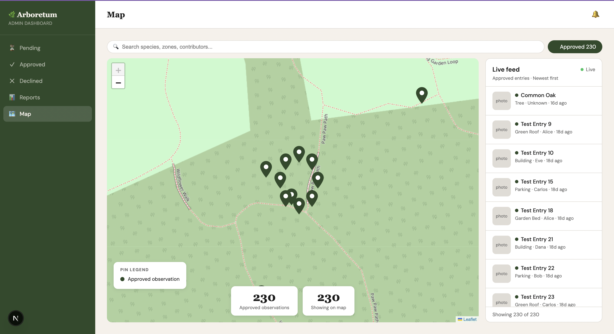
Loading the Data — Lines 72-77
useEffect(() => {
supabase.rpc('get_entries_by_status', { p_status: 'approved' }).then(({ data }) => {
const rows = (Array.isArray(data) ? data : []) as Entry[];
setEntries(rows.filter(e => e.latitude != null && e.longitude != null));
});
}, []);
This is what actually makes the map load with data. useEffect is a React hook that runs code at a specific moment. The [] at the end means it runs once, right when the page loads. Think of it as "when the map opens, do this."
Here is what happens in order:
- It calls Supabase to fetch all approved observations from the database
- When the data comes back it checks it is actually an array, if not it defaults to empty so nothing breaks
- It then filters out any entries that are missing coordinates because you cannot place a pin on a map without a latitude and longitude
- Finally it stores the clean results using setEntries which triggers the map to re-render with all the pins in place
Without this the database call would never happen and the map would just be an empty map with no pins. This is the trigger that kicks off the whole data flow the moment the page loads.
The reason it fetches the data this way is security. Instead of writing a full database query from scratch, rpc calls a function that already lives inside Supabase, get_entries_by_status, which runs with SECURITY DEFINER. This means Supabase controls exactly what data gets returned, so you cannot accidentally pull data you are not supposed to see.
Rendering the Map — Lines 106-117
<MapContainer center={CENTRE} zoom={15} style={{ height: '100%', width: '100%' }} zoomControl>
<TileLayer url="https://tile.openstreetmap.org/{z}/{x}/{y}.png" maxZoom={19} />
{spreadPins(filtered).map(e => (
<Marker key={e.entry_id} position={[e._lat, e._lng]} icon={icon}>
<Popup>
<strong>{e.name}</strong><br />
{e.element_type?.replace(/_/g, ' ')}{e.classification ? ` · ${e.classification}` : ''}<br />
{e.observer && <>{e.observer} · </>}{timeAgo(e.created_at)}
</Popup>
</Marker>
))}
</MapContainer>
This is where everything comes together. All the functions written above get used here in one block.
- MapContainer is the map wrapper. It opens centred on the arboretum, starts at zoom level 15 which is street level and fills the full screen.
- TileLayer loads the actual OpenStreetMap imagery inside the container. The streets, labels and landscape you see behind the pins all come from here.
- spreadPins(filtered).map takes the filtered entries after search, runs them through spreadPins to handle any overlapping coordinates and then loops through each one to place it on the map.
- Marker drops a pin for each entry at its exact coordinates using the custom Terra pin from makeIcon().
- Popup is the info bubble that appears when you click a pin. It shows the entry name, the element type with underscores cleaned up, the classification if it has one, who submitted it and how long ago using timeAgo().
This block is basically the payoff of all the setup. The database fetch, the custom icon, the spread logic and the search filter all feed into these 12 lines.
version 0 of the dashboard in action
This was the first working version of the dashboard, which I kept iterating on afterwards, refining the design and layout into the final version the team delivered.
The following is a breakdown of the key parts of the dashboard map I built. I chose to go into detail on these specific sections because together they tell the full story of how the map works, from setting it up in the browser, to connecting to the database, to fetching the right data, to rendering it all visually on screen.
These six sections are not independent. They form a dependency chain where each piece relies on the one before it. The Supabase client creates the connection to the database. useEffect uses that client to fetch the observation data when the page loads. setEntries stores that data in state. spreadPins takes the stored entries and processes their coordinates so overlapping pins do not stack. makeIcon builds the custom Terra pin that gets applied to each marker. And MapContainer brings everything together, taking the spread pins, applying the icon and rendering the final map on screen. Remove any one of these and the map either breaks completely, shows nothing or looks wrong.
Each section covers a different layer of the component. Some are about technical setup, some are about solving specific problems like overlapping pins, and some are about making design decisions in code like the custom Terra pin. The goal is to show not just what I built but why each part is there and how they all connect to make the map work as one thing.
This breakdown is based on commit b3b1b22c.
Client Rendering — Line 1
'use client';
The very first line of the file. In Next.js components run on the server by default, meaning they get rendered before they even reach the browser. But a map cannot work on a server. It needs the browser to render the tiles, handle the clicks and interact with the user. Adding 'use client' at the top tells Next.js to run this component in the browser instead. Without it the whole map would break.
This is the first dependency in the chain. Everything else in this file only works because this line forces it to run in the browser.
Leaflet Imports — Lines 4-6
import { MapContainer, TileLayer, Marker, Popup } from 'react-leaflet';
import L from 'leaflet';
import 'leaflet/dist/leaflet.css';
Line 4 imports the core React Leaflet components:
- MapContainer is the wrapper that renders the actual map on the page
- TileLayer loads the map tiles from OpenStreetMap, the visual layer you see
- Marker places a pin on the map at a specific coordinate
- Popup shows a small info bubble when you click a marker
Line 5 imports L, the core Leaflet library. This is used to create and customize the pin icons so they match the Terra brand instead of using the default Leaflet pins.
Line 6 imports Leaflet's CSS. This one is easy to forget but critical. Without it the map renders completely broken with no styling, overlapping tiles and misaligned controls.
These imports are what make the map renderable. They depend on the component running in the browser from Line 1. The next dependency is the database connection that will feed data into these components.
Supabase Client — Lines 20-23
const supabase = createClient( process.env.NEXT_PUBLIC_SUPABASE_URL!, process.env.NEXT_PUBLIC_SUPABASE_ANON_KEY!, );
This is basically logging into the database. You need two things to get in, the address of the database and a key to access it. Instead of writing those directly into the code where anyone could see them, they live in a separate .env file that never gets shared or pushed to Git.
This is the connection that makes data fetching possible. Without it useEffect has nowhere to fetch from. The next step is building the custom pin that will be placed on each data point once the data arrives.
Custom Map Pin — Lines 28-34
function makeIcon() {
const svg = `<svg xmlns="http://www.w3.org/2000/svg" width="28" height="40" viewBox="0 0 28 40">
<path d="M14 0C6.27 0 0 6.27 0 14c0 9.625 14 26 14 26S28 23.625 28 14C28 6.27 21.73 0 14 0z" fill="${PIN_COLOUR}"/>
<circle cx="14" cy="14" r="5.5" fill="white"/>
</svg>`;
return L.divIcon({ html: svg, className: '', iconSize: [28, 40], iconAnchor: [14, 40], popupAnchor: [0, -40] });
}
The default Leaflet pin is blue and generic so I wanted something that matched Terra. Instead of using an image file, the pin is built directly in SVG inside the code. It has two shapes, a dark green teardrop using Terra's #2E4A2A for the body and a white circle in the middle.
L.divIcon takes that SVG and turns it into an actual map pin Leaflet can use:
- iconSize: [28, 40] — the pin is 28px wide and 40px tall
- iconAnchor: [14, 40] — the very tip of the pin sits exactly on the coordinates so it points to the right spot on the map
- popupAnchor: [0, -40] — makes the popup appear above the pin so it does not cover it
Every single pin on the map comes from this one function.
This function depends on L from the Leaflet import. It produces the icon that MapContainer will apply to every Marker. Before the markers can be placed though, the data needs to be fetched and the coordinates need to be processed.
Pin Spreading — Lines 36-55
function spreadPins(pins: Entry[]) {
const groups: Record<string, Entry[]> = {};
for (const pin of pins) {
const key = `${pin.latitude},${pin.longitude}`;
if (!groups[key]) groups[key] = [];
groups[key].push(pin);
}
return pins.map(pin => {
const key = `${pin.latitude},${pin.longitude}`;
const group = groups[key];
if (group.length === 1) return { ...pin, _lat: pin.latitude, _lng: pin.longitude };
const idx = group.indexOf(pin);
const angle = (2 * Math.PI * idx) / group.length;
return {
...pin,
_lat: pin.latitude + OFFSET_RADIUS * Math.cos(angle),
_lng: pin.longitude + OFFSET_RADIUS * Math.sin(angle),
};
});
}
This one solved a problem I did not even think about until it became obvious. In an arboretum multiple people can submit an observation at the exact same GPS location. Two people logging the same tree for example. If you just drop two pins on the same coordinates they stack on top of each other and you would never know the second one exists.
This function fixes that. It first groups all pins by their coordinates. If a location only has one pin it stays exactly where it is. If there are multiple pins at the same spot it fans them out in a small circle around the original point using Math.cos and Math.sin to calculate evenly spaced positions. OFFSET_RADIUS controls how far apart they spread, just a few meters in real distance so it looks natural on the map.
what it looks like
This function depends on the entries fetched by useEffect and stored in state. It takes that data and prepares the coordinates for MapContainer to render. Without the data from useEffect this function has nothing to process.
Loading the Data — Lines 72-77
useEffect(() => {
supabase.rpc('get_entries_by_status', { p_status: 'approved' }).then(({ data }) => {
const rows = (Array.isArray(data) ? data : []) as Entry[];
setEntries(rows.filter(e => e.latitude != null && e.longitude != null));
});
}, []);
This is what actually makes the map load with data. useEffect is a React hook that runs code at a specific moment. The [] at the end means it runs once, right when the page loads.
Here is what happens in order:
- It calls Supabase to fetch all approved observations from the database
- When the data comes back it checks it is actually an array, if not it defaults to empty so nothing breaks
- It then filters out any entries that are missing coordinates because you cannot place a pin on a map without a latitude and longitude
- Finally it stores the clean results using setEntries which triggers the map to re-render with all the pins in place
The reason it fetches data this way is security. Instead of writing a raw database query, rpc calls a function that already lives inside Supabase called get_entries_by_status, which runs with SECURITY DEFINER. This means Supabase controls exactly what data gets returned so you cannot accidentally pull data you are not supposed to see.
This is the step that connects the Supabase client to the rest of the component. It depends on the client from Lines 20-23 to make the call, and the data it returns gets processed by spreadPins and rendered by MapContainer.
Rendering the Map — Lines 106-117
<MapContainer center={CENTRE} zoom={15} style={{ height: '100%', width: '100%' }} zoomControl>
<TileLayer url="https://tile.openstreetmap.org/{z}/{x}/{y}.png" maxZoom={19} />
{spreadPins(filtered).map(e => (
<Marker key={e.entry_id} position={[e._lat, e._lng]} icon={icon}>
<Popup>
<strong>{e.name}</strong><br />
{e.element_type?.replace(/_/g, ' ')}{e.classification ? ` · ${e.classification}` : ''}<br />
{e.observer && <>{e.observer} · </>}{timeAgo(e.created_at)}
</Popup>
</Marker>
))}
</MapContainer>
This is where everything comes together. All the functions and setup from above get used here in one block.
- MapContainer is the map wrapper. It opens centred on the arboretum, starts at zoom level 15 which is street level and fills the full screen. It depends on the Leaflet imports from Lines 4-6.
- TileLayer loads the actual OpenStreetMap imagery inside the container. The streets, labels and landscape you see behind the pins all come from here.
- spreadPins(filtered).map takes the filtered entries after search, runs them through spreadPins to handle any overlapping coordinates and then loops through each one to place it on the map. It depends on both useEffect having fetched the data and spreadPins having processed the coordinates.
- Marker drops a pin for each entry at its exact coordinates using the custom Terra pin from makeIcon(). It depends on makeIcon to produce the icon.
- Popup is the info bubble that appears when you click a pin. It shows the entry name, the element type with underscores cleaned up, the classification if it has one, who submitted it and how long ago using timeAgo().
This block is the payoff of the entire chain. The 'use client' declaration lets it run in the browser. The Leaflet imports provide the map components. The Supabase client connects to the database. useEffect fetches the data. spreadPins processes the coordinates. makeIcon builds the pin. And MapContainer renders it all on screen. Every single piece is needed for the map to work.
version 0 of the dashboard in action
This was the first working version of the dashboard, which I kept iterating on afterwards, refining the design and layout into the final version the team delivered.
Dashboard Redesign — Glass Morphism and Review Queue
The day after building the initial map I went back in and redesigned the whole thing. The first version was functional but it needed to look and work better.
Visual Redesign — Glass Morphism
I introduced a glass morphism design system across the dashboard. Frosted glass panels floating over the live map using CSS backdrop-filter: blur(16px) with a semi-transparent warm cream background. This became the visual language for the whole dashboard going forward, everything consistent and on brand.
Pin System Overhaul
I replaced the single teardrop pin with a colour coded dot system. Green for approved entries and dark forest green for pending. The map now fetched and displayed both at the same time so reviewers could see the full picture at a glance without switching between views.
Review Queue
I added a full queue view showing all entries across three statuses, pending, approved and declined, with filter tabs to switch between them. The most important part of this update was bringing together what used to be separate screens for approved and declined entries into one single view with filtering. Instead of navigating between screens, reviewers can now see everything in one place and filter by status with one click. This made the whole reviewer experience significantly more intuitive. This was also the first time the dashboard had actual reviewer functionality rather than just being a read only map. Staff could now actually do something with the data.
Data Expansion
The app now fetched all three entry statuses in parallel from Supabase instead of just approved ones. I also added status badges colour coded by state, yellow for pending, green for approved and red for declined, so the status of each entry was immediately visible without having to click into it.
Going from a read only map to a functional reviewer tool in one commit was a big jump and honestly one of the things I am most proud of from this module.
Key Code Changes
These changes are based on commit 080ba932.
1. Glass Morphism Style — Lines 85-91
backdrop-filter: blur(16px); background: rgba(245,241,235,0.75);
This is the signature visual of the whole dashboard. Instead of solid white panels everything uses a frosted glass effect. backdrop-filter: blur(16px) blurs whatever is behind the panel which is the live map, and rgba(245,241,235,0.75) makes it 75% opaque warm cream. One glass object defined once and applied to every panel so the whole UI stays consistent.
2. Parallel Data Fetching — Lines 104-114
Promise.all([
supabase.rpc('get_entries_by_status', { p_status: 'approved' }),
supabase.rpc('get_entries_by_status', { p_status: 'pending' }),
supabase.rpc('get_entries_by_status', { p_status: 'declined' }),
])
The previous version only fetched approved entries. This version uses Promise.all to fetch approved, pending and declined all at the same time in parallel. The page does not have to wait for one to finish before starting the next. Faster load and now the dashboard has the full picture.
3. Colour Coded Pin System — Lines 31-43
Replaced the single teardrop pin with a makePin() function that takes any colour and builds a small circular dot pin. Two variants, green for approved and dark forest green for pending. Reviewers can now see at a glance which entries still need attention directly on the map.
4. View Switching — Map vs Queue — Lines 97, 163-174
Added a view state that toggles between the map and the review queue. The navbar has two pill buttons, Map and Queue, and the Queue button shows a live yellow badge with the pending count so reviewers always know how many entries need attention without clicking into anything.
5. Review Queue Table — Lines 289-314
A full table view of all entries with columns for ID, name, type, classification, submission date, status badge and a View button linking to the individual entry review page. Filter tabs at the top let reviewers narrow down by status.
the redesigned dashboard in action
Small but Meaningful Update
These changes are based on commit 01c6c367.
Two small changes that made a visible difference.
Navbar Icon Swap
Replaced the inline leaf SVG in the navbar with the actual branded Terra leaf icon, a shield and leaf shape with a stem and two branch lines drawn in cream #f6f1eb on dark green. The icon files were also copied into apps/web/public/ so they are properly accessible on the web side. A small change but it meant the navbar finally used the real Terra brand asset instead of a placeholder.
Queue Overlay Background
Changed the review queue overlay from frosted glass with backdrop-filter: blur(20px) to a solid cream #F5F1EB. The blur effect over the map looked good on the map view but for a table with a lot of data it was harder to read and likely caused some performance issues. Solid background is cleaner and more readable for reviewing entries.
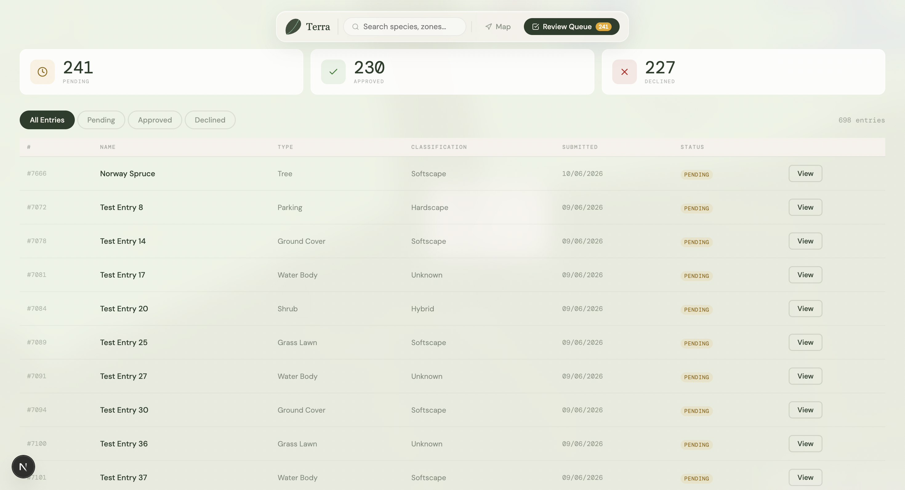
Before
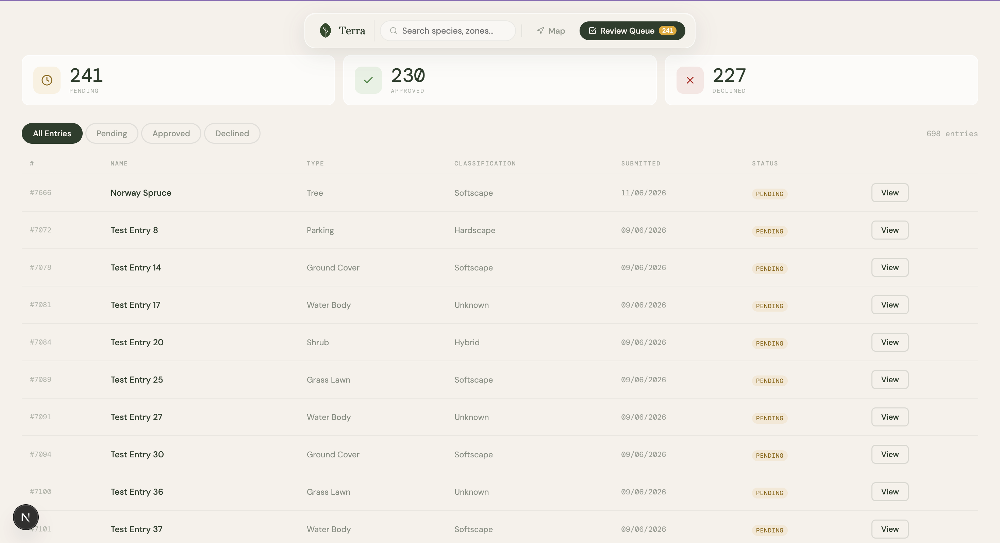
After
Why
Designing a dashboard for ecological and tree data was completely new territory for me. I had never done anything like it before and with time constraints I needed a starting point fast.
How
I used Claude as a design tool to help me get there. I gave it a proper brief, what the platform does, who the primary user is, and that it needed to work beyond just the Humber Arboretum. I also attached the Terra brand references so the output would stay inside the visual system we had already established rather than drift into something generic. From there Claude asked me a set of clarifying questions about scope, flows, density and fidelity. I narrowed it down to the desktop dashboard only, focusing on the map overlay, the review queue and the species inventory.
What
What came out was a full design canvas with five screens but I focused on one specifically, the map overlay screen. I used that as my reference and starting point for my further iterations. It gave me enough to work from to start coding the dashboard UI for the team in TypeScript and build from there.
So What
I had zero experience designing a dashboard for this kind of data. Having that starting point meant I could focus on refining and building rather than starting from a blank page with no idea where to go. I also just wanted to see what it would produce and honestly, to check if my job just got replaced. It still needed a lot of fine tuning so I feel safe for now. But it was not bad at all for the short brief I gave it and I think it is probably already being used by a lot of designers whether they admit it or not.
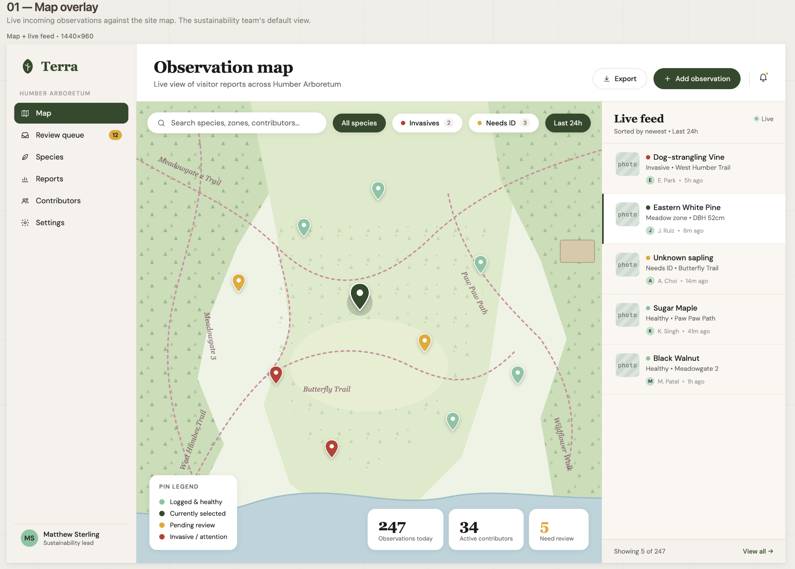
Week 5
Deliverables
- Tech Stack
- Login Page Design
- Final Touches
Why
In week 2 the team needed to decide what we were actually going to build with before anyone wrote a single line of code. I had never heard of any of the technologies we ended up choosing before this module so this was a learning moment for me from the start.
How
The team discussed the options together and the developers took the lead since they had the knowledge to evaluate what made sense technically. I listened, asked questions, and made sure I understood at least the basics of why each choice was made.
What
We landed on the following stack:
- Next.js — the main framework for building both the Field App and the Staff Dashboard. A framework is basically a pre-built set of tools that makes building web apps faster and more structured so the team could focus on the actual product.
- TypeScript — a version of JavaScript that adds rules around how code is written, making the codebase easier to maintain across the whole team.
- Supabase — handles the database, authentication, file storage and real-time data. The alternative was setting up PostgreSQL directly but Supabase wraps PostgreSQL and adds everything on top so you get it all in one place. The SQL functions were a big factor and the UI is straightforward enough to manage without a dedicated database expert.
- Expo Go — used for developing and testing the mobile app on real devices. The alternative was React Native CLI which is much more complex, or building fully native apps in Swift and Kotlin which would have meant two separate codebases. Expo Go gave the team a real mobile app without the painful setup.
- OSM (OpenStreetMap) — provides the actual map data. The alternative was Google Maps but that comes with a cost. OpenStreetMap is open source and free, which directly aligned with our Cost Efficiency quality attribute.
- Docker — makes sure every team member runs the exact same development environment on their own computer, avoiding the situation where something works on one machine but breaks on another.
So What
Looking at the stack now I can see how the choices connect back to the quality attributes we defined in week 1. Supabase supports our Scalability requirements, OpenStreetMap directly addresses Cost Efficiency, and Expo Go supports Compatibility since it works across devices. The decisions were not random, they tied back to what the team agreed mattered most from the start.

Login Page — Design Contribution
My contribution to the login page was on the design side. I gathered inspiration, shared it with the team and we discussed together what we wanted it to look like. I also created prototypes based on that inspiration to give Armend a clear direction to build from.
Originally I wanted to use a real photograph of the Humber Arboretum as the background but according to my teammates that style felt outdated. So instead we went with a gradient background combined with glass morphism elements.
the inspiration I gathered
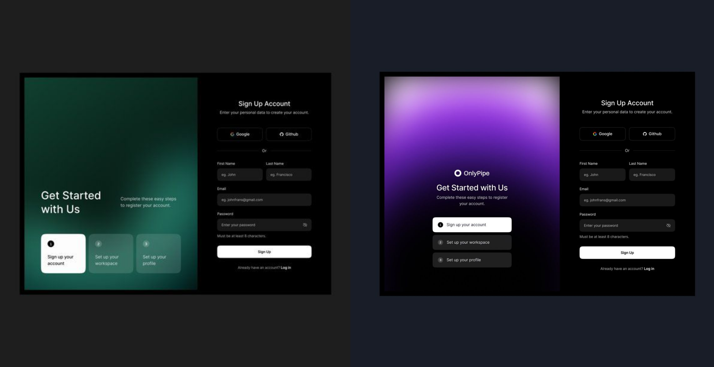
That decision actually became the origin of the visual language that carried across the whole dashboard. The frosted glass panels, the warm cream tones, the layered feel, it all started here with the login page and then got applied consistently everywhere else. Giving the product a very modern iOS feel instead of a static boring website.
the prototypes I created
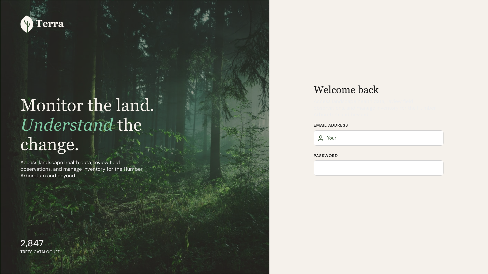
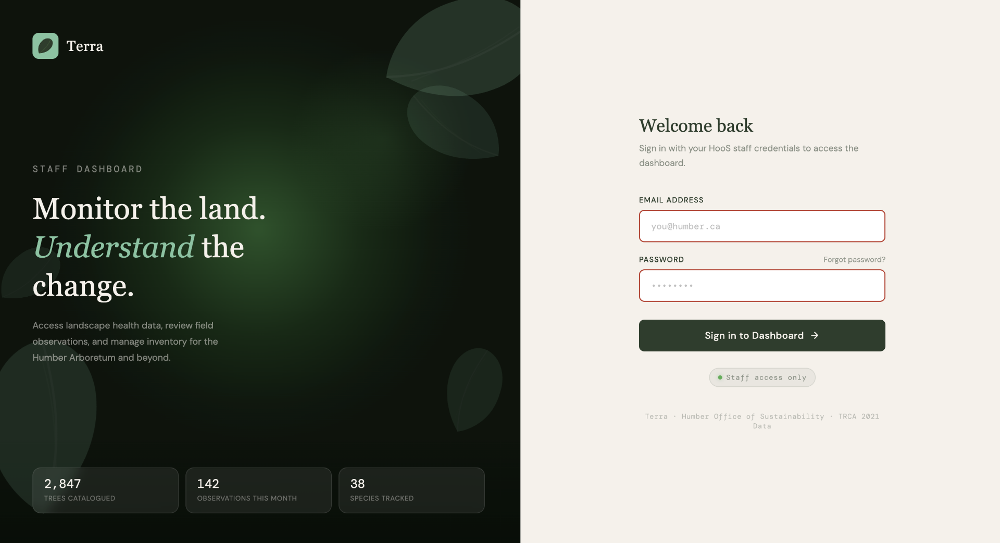
It is a good example of how a design decision made early on can shape the look and feel of an entire product.
Final Touches
This was commit 1e74652a.
The Search Feature
Typing a name in the navbar filters entries in real time and triggers a smooth fly-to animation on the map using map.flyTo with a 1.2 second duration. It automatically opens the popup and selects the pin at the same time. The search, the map movement and the pin state all coordinate together in one seamless flow.
This was actually one of the trickier parts to build. The issue was timing. When the map finishes flying to a location, the code needs to find the pin and activate it, open the popup and add the glowing ring. But Leaflet does not always render the pin's HTML element immediately when the map stops moving. It only renders markers when it needs to, called lazy rendering, which meant the pin sometimes did not exist in the browser yet by the time the code tried to find it.
The solution was a retry loop inside FlyToController:
retriesLeft: 10 setTimeout(retry, 200)
Instead of trying once and failing, the code tries up to 10 times waiting 200 milliseconds between each attempt. It keeps checking "is the pin there yet?" until it finds it and then activates it.
map.once('moveend') on line 64 makes sure the whole sequence waits for the fly animation to fully finish before even starting to look for the pin. Without that it would be trying to activate something that has not loaded yet.
Getting this right took some back and forth but the end result is a search that feels completely seamless.
Custom SVG Pins
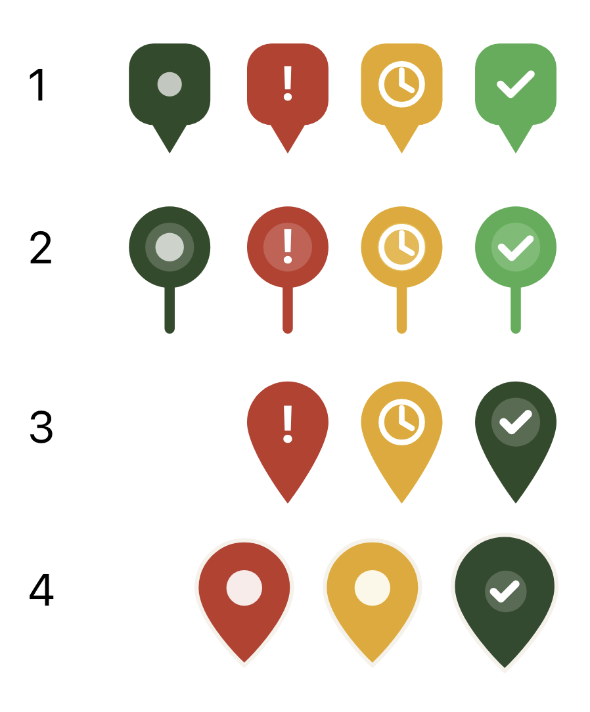
Before building the new pins I put together four design options and discussed them with the team. Options 1 and 2 were not teardrop shapes so those were out. Option 4 was a teardrop but honestly it just did not look great. Option 3 was the one we all agreed on. It kept the classic teardrop feel but with a more modern look, a clean shape with an icon inside that felt intentional rather than generic.
I originally wanted to use a regular green for the approved pin but one of my teammates pushed for keeping the Terra branding consistent in the pins as well. So we went with the darker Terra green #2E4A2A instead. A small detail but it kept everything tied to the brand.
I built the pins with three variants. Dark Terra green with a checkmark for approved entries, yellow with a clock icon for pending, and red with an exclamation mark for critical states. The reason I added icons inside the pins rather than relying on colour alone was accessibility. We received feedback that colour blind users would not be able to distinguish between pin statuses if colour was the only indicator. Adding a recognisable icon inside each pin means anyone can tell the status at a glance without clicking anything, regardless of how they perceive colour.
Pin Interactions
I added hover, select and pulse ring states to every pin. Clicking a pin highlights it with an animated glowing ring, green for approved and yellow for pending, opens the popup and keeps the pin selected until the popup is closed.
Hover — Line 846
.terra-pin:hover { transform: scale(1.2); }
Simple on the surface, the pin scales up 20% on hover. But the reason it feels springy and bouncy rather than just growing is the transition on line 844:
transition: transform 0.22s cubic-bezier(0.34, 1.56, 0.64, 1);
The cubic-bezier with the 1.56 value is what causes the overshoot. It goes slightly past the target scale and snaps back, giving it that bounce feeling. Getting that easing curve right is what makes the difference between something that feels alive and something that just moves.
The tricky part was that Leaflet pins are not normal DOM elements. Leaflet manages them separately from React so you cannot just add a CSS class the normal way. The .terra-pin class had to be injected directly into the SVG HTML string inside makeApprovedPin() and makePendingPin(), and then the CSS targets it globally in globals.css. If the class name was wrong or the CSS was not global the hover would just not work at all.
Pin Click Interaction — Lines 820-834
When a pin is clicked it first deselects whatever was previously selected by removing the selected class and the pulse div. Then it adds selected to the new pin and dynamically creates a pin-pulse div and injects it inside the pin element. The pulse colour is set based on status, #E6A817 yellow for pending and #4caf50 green for approved. This is all direct DOM manipulation on top of Leaflet's rendering rather than letting React handle it, which gave full control over exactly how the selected state looked and animated.
Pin Add Event — Lines 798-818
Every time a pin is added to the map it stores its entry_id and status as data attributes on the element. It also checks if this pin was the one targeted by a search fly-to. If it was, it immediately selects itself and opens its popup without waiting for a click. This is what makes the search feel seamless, the pin knows it is the destination and activates itself automatically.
Queue Filtering — Lines 751-759
All filtering happens client-side using useMemo, meaning no extra database calls are made every time someone filters. It chains three filters in order, status, type and classification, and name search. Then sorts by date using .getTime() to flip between newest and oldest. useMemo means the filtering only recalculates when one of the filter values actually changes, not on every single render. Keeps it fast and efficient.
Final Final Touches
The last round of commits were a mix of bug fixes, visual polish and small but meaningful UX improvements that brought the dashboard to its finished state for the Vienna module.
Bug Fixes — 300ccfdc
Fixed a bug where clicking any pin always opened the popup regardless of state. Also updated the map legend to only show the two actual pin statuses in use, approved and pending, rather than all possible states.
Pin Size and Pulse Ring — 51bccb9a
Increased pin size from 26×35px to 32×43px to make them more visible and easier to click on the map. Repositioned the pulse ring to stay centered on the larger pin.
Navbar Logo — 67145abb
Swapped the navbar logo to the proper Terra Icon_Light SVG at a larger size and tightened the navbar padding. Small but it made the top bar feel more finished and on brand.
Logo Navigation — f5ac5ad8
One line of code but a meaningful UX addition. Clicking the Terra logo now navigates back to the map view from anywhere in the dashboard. Standard navigation behaviour that was missing.
Pin Redesign — 29bfb59d
Redesigned the pins from a rounded square shape back to a classic teardrop. Approved changed to dark forest green #2e4a2a and pending stayed yellow. Cleaner and more on brand.
Entry ID Search — 0c6a53b2
Added the entry ID to popup cards and search filters. Also added support for searching with a # prefix to find entries by ID number directly, useful for staff who know the exact entry they are looking for.
ID Search Polish — 6def938f
Wired up the ID search fully, switched the queue overlay to a solid cream background and did a general navbar and UI polish pass to tighten everything up.
Live Hashtag Search Dropdown — f77a8cfb
The hashtag search now shows a live dropdown of results while typing and flies the map to the selected pin on click. Makes finding a specific entry fast and intuitive without having to know the exact ID.
the finished dashboard
Lab Exercises
Deliverables
- Lab 6 — Contact Management API
- Lab 10 — PostgreSQL Integration
- Lab 12 — OpenAPI and Swagger UI
Why
This lab was the first of three progressive exercises building a Contact Management REST API in ASP.NET Core. The goal was to build a working API that can create, read, update and delete contacts with all data stored in memory. I had never worked with C# or anything API related before so I used AI to help me understand the steps and generate a guide to work from.
How
Before writing a single line of code I created a diagram to map out the structure of what I was going to build. This helped me understand how the pieces connected before I started. The diagram shows the full flow from the HTTP client down to where the data is actually stored.
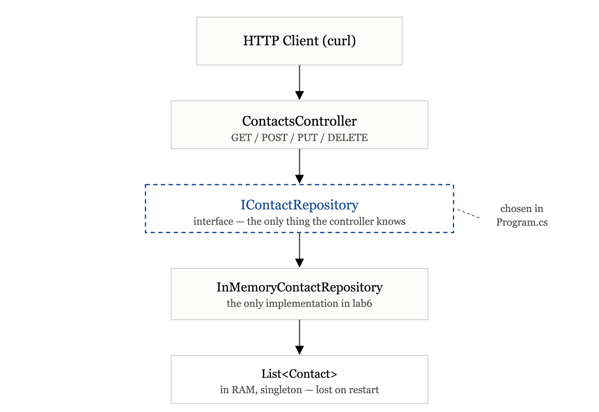
The tech stack for this lab:
- ASP.NET Core — the framework used to build the API
- C# — the programming language, my second time working with it
- .NET 7 — the runtime version installed on my machine
- curl — used to test the API directly in the terminal
- VS Code — the code editor
I created the project using dotnet new webapi in the terminal and built it following a clean structure of Controller, Repository and Model. I used an interface called IContactRepository to abstract the storage so the controller never touches the data directly, it just calls the repository. The actual data is stored in a simple list in memory using InMemoryContactRepository with an auto incrementing ID counter. The repository was registered as a singleton in Program.cs so the same list persists across all requests for the lifetime of the app.
What
The controller exposes the full CRUD surface at api/contacts:
- GET / — list all contacts
- GET /{id} — fetch one contact or return 404 if not found
- POST / — create a new contact, returns 201 with a location header
- PUT /{id} — update a contact, returns 204 or 404
- DELETE /{id} — remove a contact, returns 204 or 404
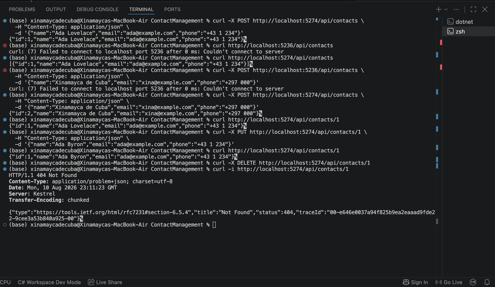
I tested everything using curl in the terminal. The screenshot above shows the full flow in action, creating a contact, fetching it, updating it, deleting it and confirming it returns 404 afterwards. I even added myself as a contact which felt appropriate.
I ran into a few issues along the way. The machine had .NET 7 installed instead of .NET 8 which the guide assumed but this was not a blocker. The VS Code GUI could not find the SDK so I created the project via the terminal instead. VS Code also showed compile errors about a missing Models namespace which turned out to be because I had never created the model file yet. And I used the wrong port number from the guide instead of reading the actual port the app printed. All small things but good learning moments.
Plain Language Explanation
A small program that keeps a list of contacts, name, email and phone, and lets you add, view, change or remove them by sending it simple requests. The same idea as a phone contacts app, just running as a program you talk to over the internet instead of tapping on a screen.
The front desk (ContactsController.cs) is the part that receives every request. Think of it like the front desk at an office. Someone walks up and says "I'd like to add a new contact" or "show me contact 3" or "delete contact 3." The front desk understands what is being asked, checks it makes basic sense and passes the actual work along.
The storage clerk (InMemoryContactRepository.cs) is the part that actually holds onto the contacts. It keeps a running list, hands out a new ID number to each new contact and does the real work of adding, finding, changing or removing an entry from that list.
The important design choice is that the front desk never touches the list directly. It always asks the storage clerk to do it. This means if you ever wanted to change how contacts are stored, like swapping to a real database which is exactly what Lab 10 does, you would only need to replace the storage clerk. The front desk would not need to change at all because it never knew any of the storage details in the first place.
The program responds with standard codes that any web app understands:
- 200 — here is the thing you asked for
- 201 — created successfully, here is the new item
- 204 — done, nothing more to show
- 400 — what you sent does not make sense
- 404 — nothing exists with that ID
Everything is stored in memory only, meaning if the program is restarted the whole contact list is wiped and starts empty again. That is intentional for this exercise. The goal was to prove the logic works, not to build permanent storage yet.
So What
This was my second time working with C# and my first time with ASP.NET Core. Everything in this lab was new to me. I had never built an API before, never worked with controllers or repositories, never heard of dependency injection and never used curl to test anything. The structure made more sense than I expected though. Controller, Repository and Model each having a clear responsibility reminded me of how components work in frontend development which made it easier to follow. Having a diagram from the start and AI to help explain things and generate a guide was also very helpful. I would not have been able to get through it without those tools. And now that the foundation is there I am ready to build upon it in Lab 10.
Why
Lab 6 proved the logic worked but the data disappeared every time the app restarted because everything was stored in memory. Lab 10 replaced that with a real PostgreSQL database, moving the project from a working prototype to something closer to an actual backend. The good news was that the architecture from Lab 6 had already been designed for this. Because the CRUD operations were hidden behind the IContactRepository interface, the controller had no idea how data was being stored. That meant swapping in a real database only required writing one new class.
How
Before writing any code I created a diagram to map out what was changing. The controller stays completely unchanged from Lab 6. The interface stays the same. The only thing that changes is what sits behind the interface, InMemoryContactRepository gets replaced by PostgresContactRepository which uses the Npgsql driver to run real SQL against a PostgreSQL database.
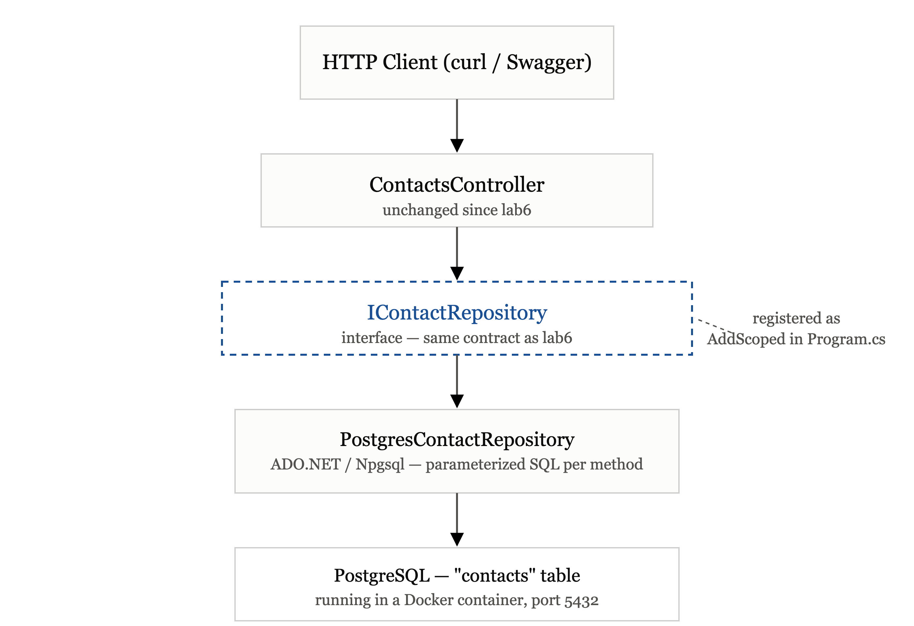
The tech stack for this lab:
- ASP.NET Core — same framework as Lab 6
- C# with Npgsql — the library that lets C# talk to PostgreSQL, installed via dotnet add package Npgsql --version 8.0.3
- PostgreSQL 16 — the database, running in a Docker container
- Docker — used to run the PostgreSQL database locally
- dotnet user-secrets — used to store the database password safely outside of source control
What
I started PostgreSQL with Docker:
docker run -d --name postgresdb \ -e POSTGRES_USER=postgres \ -e POSTGRES_PASSWORD=postgres \ -p 5432:5432 \ -v contactsdb_pgdata:/var/lib/postgresql/data \ postgres:16
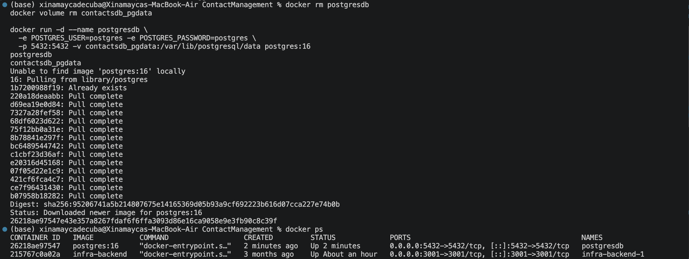
Then connected to it and created the contacts table:
CREATE DATABASE contacts_db; \c contacts_db CREATE TABLE IF NOT EXISTS contacts ( id SERIAL PRIMARY KEY, name VARCHAR(100) NOT NULL, email VARCHAR(150), phone VARCHAR(50) );
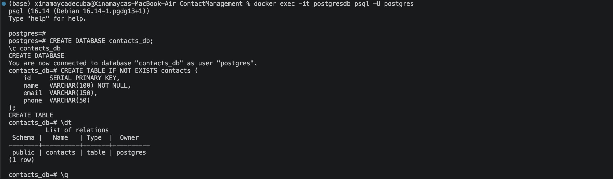
I wrote PostgresContactRepository implementing the same IContactRepository interface using parameterized SQL for each operation. Then swapped it in with a one line change in Program.cs, changing AddSingleton to AddScoped since a database backed repository should open a fresh connection per request rather than holding shared state. The connection string password was stored using dotnet user-secrets so it never ended up in source control.
The API works exactly the same from the outside. Same endpoints, same responses. But now data persists across restarts because it lives in a real database instead of a list in memory.
I ran into several problems along the way:
Container exited immediately on first run. Used the --rm flag which deleted the container and its logs automatically when it crashed. Fixed by rerunning without --rm so the logs survived and could be inspected.
PostgreSQL 18 rejected the standard mount path. The postgres:latest image had moved to version 18 which changed its expected data directory and hard errored against the older mount path in the setup instructions. A fresh volume did not fix it which confirmed the issue was the image version itself. Fixed by pinning to postgres:16.
Npgsql's latest version dropped support for .NET 7. Installing without a version number pulled Npgsql 10 which only supports .NET 8, 9 and 10. Fixed by specifying --version 8.0.3 which supports .NET 7.
Connection string pasted into the terminal instead of the config file. Not an actual application error, just a reminder to open the file in the editor rather than typing in the shell.
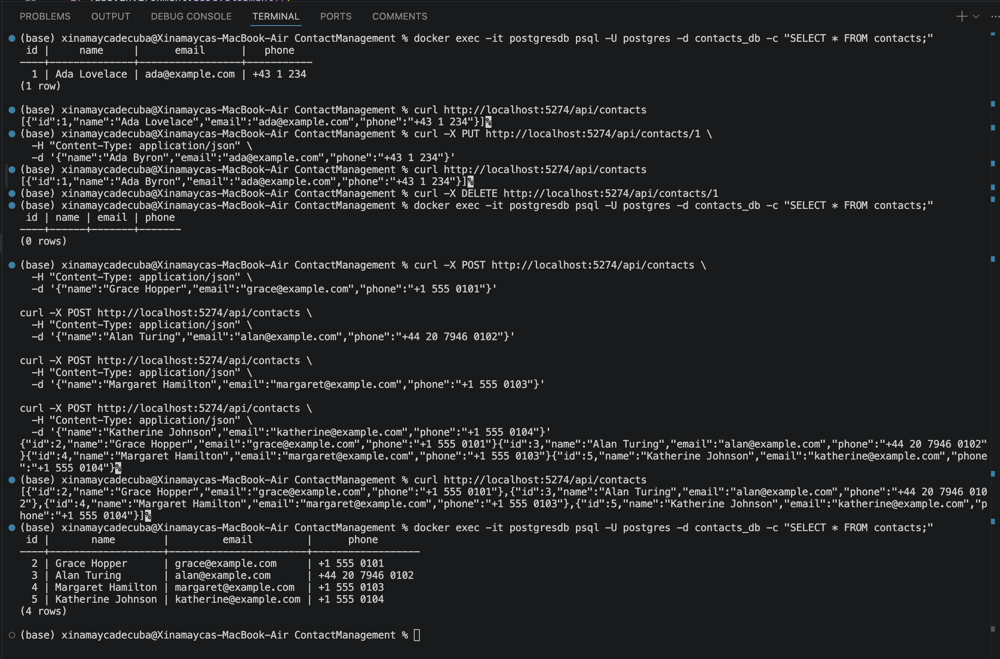
The screenshot above shows the same contacts created through curl requests turning up in a direct SQL SELECT against the database, confirming the data was actually persisted rather than just held in memory.
Plain Language Explanation
What this actually is
Lab 6 built a contact storing program, but with one catch. Everything it remembered disappeared the moment the program restarted because it was only ever keeping a list in the computer's working memory. Lab 10 fixes that one problem. Contacts now get written somewhere permanent so they survive a restart, a crash or the computer being turned off entirely.
What actually changed
Picking up the metaphor from Lab 6, there is a front desk that receives every request and a storage clerk who does the actual storing.
The front desk did not change at all. It still receives requests, checks they make sense and passes the work along, exactly as before.
The storage clerk got replaced. Instead of keeping a paper list that gets thrown out whenever the office closes, the new clerk writes everything into a proper filing cabinet, a real database, that stays intact no matter what happens to the front desk.
The front desk never noticed the swap because it never talked to the list or the filing cabinet directly in the first place. It only ever says "storage clerk, please handle this" and lets whoever is on duty deal with the details. That is why replacing the storage mechanism did not require touching the front desk code at all.
Where the filing cabinet actually lives
The real database is PostgreSQL, a genuine industry standard database system, the same category of tool real companies use to store customer records, orders and so on. Rather than installing it directly onto the computer it runs inside Docker, which is best understood as a disposable self-contained box. One command turns the database on inside that box, another would remove it completely, and it cannot leave stray files scattered around the computer.
What happens when you add a contact now
- You send a request: "add a contact named Ada, email ada@example.com"
- The front desk receives it and checks the name is not blank, same as before
- The front desk asks the storage clerk to add it, same as before
- The storage clerk writes a new row into the database contacts table and the database hands back the ID number it assigned
- The front desk sends back a confirmation including that ID number
Why this is worth doing
An in-memory list is fine for proving the logic works but it is not something you would ever actually rely on. Restart the program, which happens constantly during deployments, crashes and server reboots, and every contact is gone. A real database is what makes the data trustworthy enough to build something real on top of.
So What
This lab showed me exactly why the interface pattern from Lab 6 mattered. What could have been a complete rewrite turned into writing one new class and changing one line. That is a real software engineering principle, design for change. I also got practical experience with Docker for the first time, running a real database locally, and learned about handling credentials safely with user secrets. The problems I ran into were all solvable once I read the error messages carefully, which is becoming a pattern. And with the foundation now properly in place with a real database behind it, I am ready to move on to Lab 12.
Why
Lab 12 adds the final layer to the Contact Management API. Instead of testing everything through curl commands in the terminal, the API now publishes a machine readable description of itself and serves a visual interface in the browser where you can try every endpoint with a click. The .NET 7 template had already included the full Swagger setup by default back in Lab 6 and I had not touched that code in Lab 10 either. So for this lab there was no code to write at all. It was purely about opening the Swagger UI, understanding what it was showing and testing all five endpoints through it.
How
Before diving in I created a diagram to better understand what was happening in this lab.
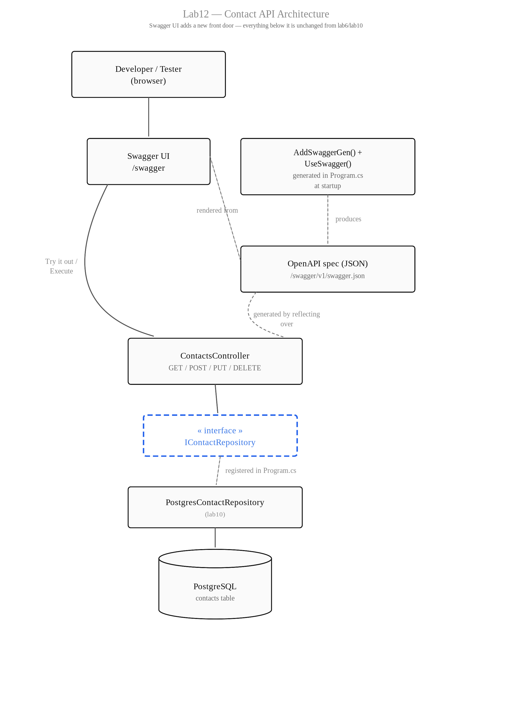
At the top is the Developer/Tester in a browser who has two paths. On the left they open Swagger UI at /swagger and use the Try it out button to send requests to the API. On the right, AddSwaggerGen() and UseSwagger() in Program.cs generates the OpenAPI spec JSON at /swagger/v1/swagger.json at startup. The Swagger UI is rendered from that spec, which is itself generated by automatically reading the ContactsController to figure out what endpoints exist. From there the request flows down through ContactsController, through the IContactRepository interface registered in Program.cs, into PostgresContactRepository from Lab 10, and finally into the PostgreSQL contacts table. Dashed lines show automatic or indirect connections, solid lines show direct request flows.
The Swagger setup was already in Program.cs from the template:
builder.Services.AddEndpointsApiExplorer(); builder.Services.AddSwaggerGen(); app.UseSwagger(); app.UseSwaggerUI();
These four lines do two things. AddSwaggerGen generates an OpenAPI specification, a JSON document that describes every endpoint, its parameters and possible responses. UseSwaggerUI serves a visual web page that reads that spec and turns it into a clickable interface. Running the app and navigating to http://localhost:5274/swagger opens that interface.
What
The Swagger UI showed all five endpoints for the Contacts API, each colour coded by method. GET in blue, POST in green, PUT in yellow and DELETE in red. I used the Try it out button on each one to test the full CRUD cycle:
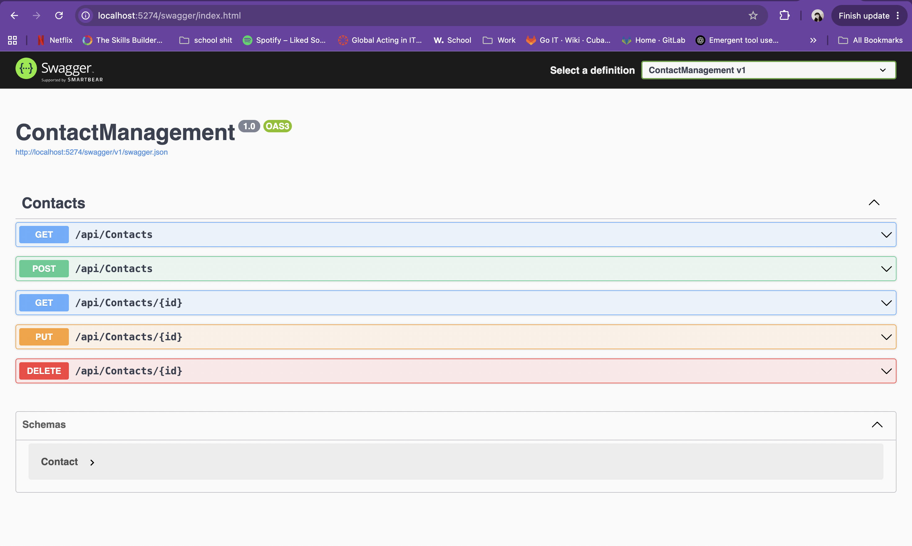
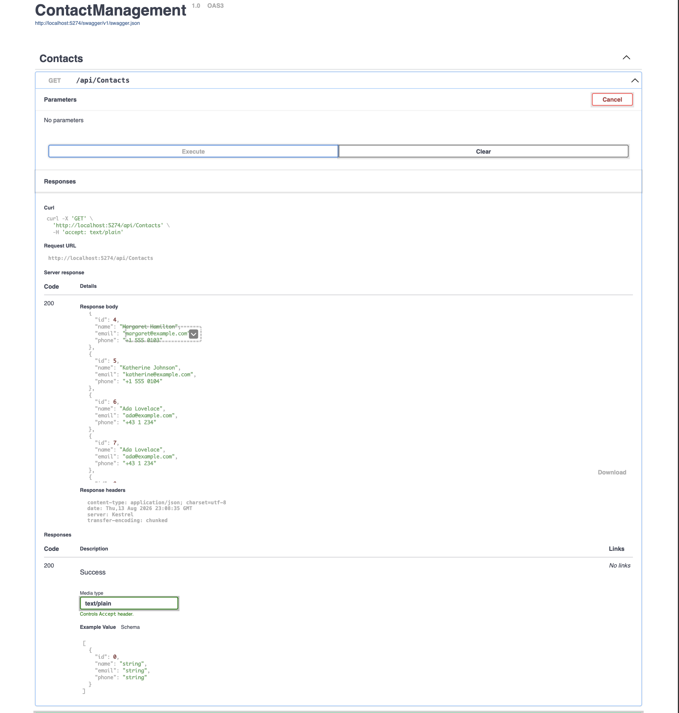
Listed all contacts in the database, returned a 200 with the full contact list in JSON format.
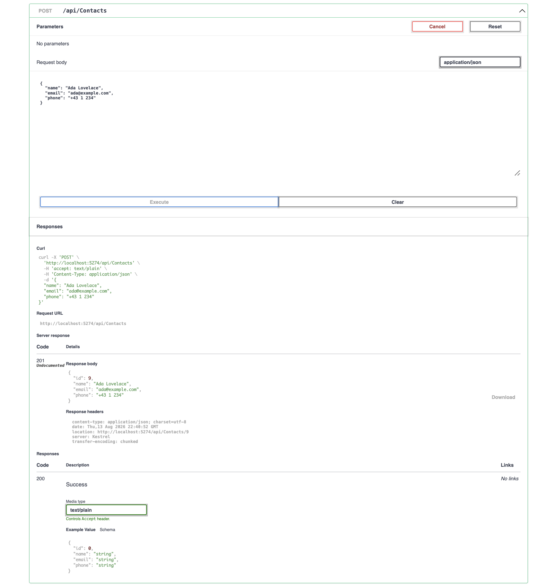
Created a new contact, Ada Lovelace, returned a 201 with the new contact including the ID assigned by the database and a location header pointing to the new resource.
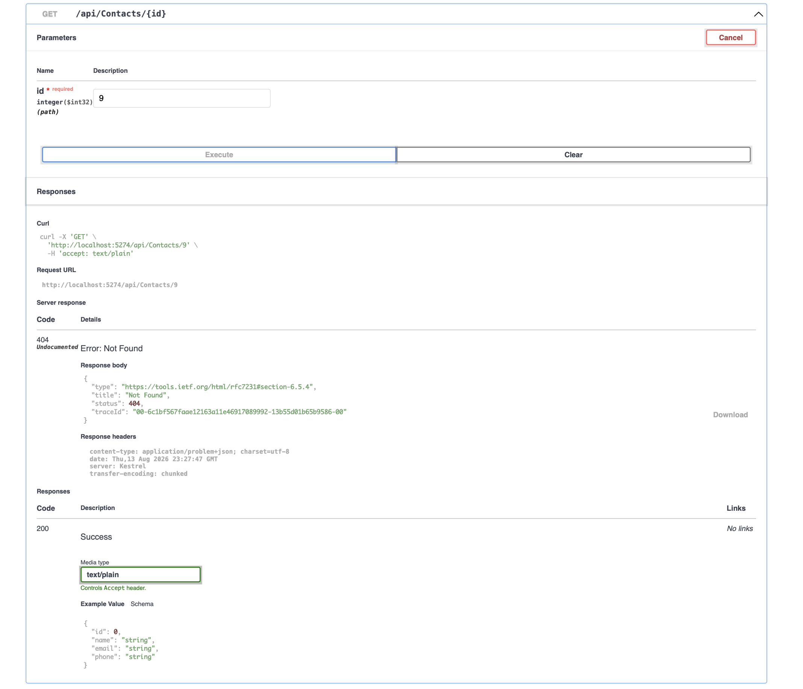
Fetched contact 9 which had already been deleted, returned a 404 Not Found with a proper error body. A good demonstration that the error handling works correctly.
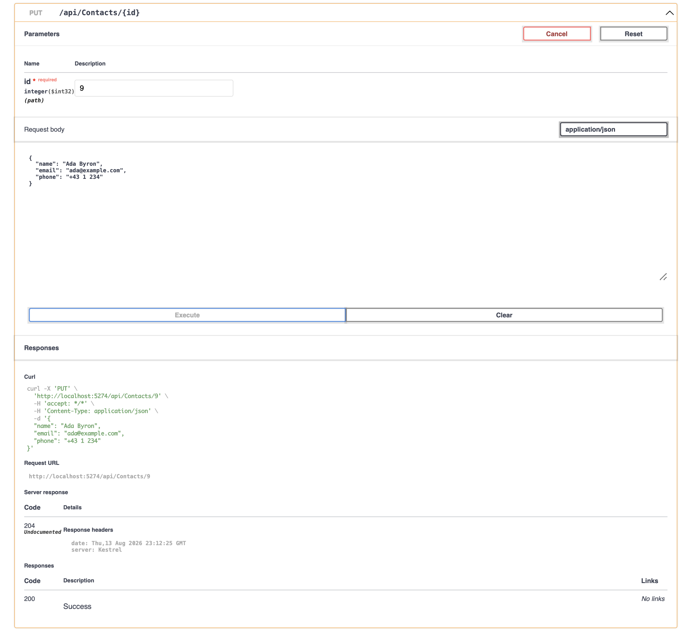
Updated contact 9 to Ada Byron, returned a 204 No Content confirming the update was successful without returning the updated object.
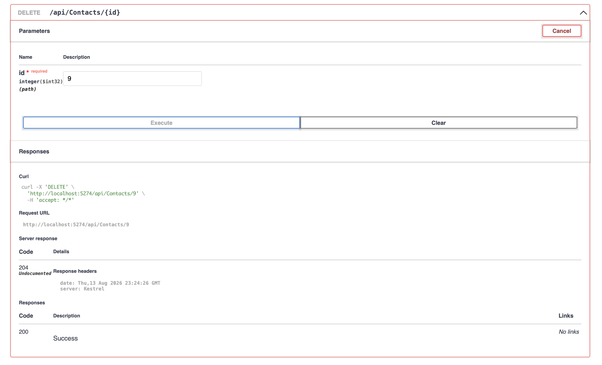
Deleted contact 9, returned a 204 No Content confirming it was removed.
Plain Language Explanation
Up until now testing the API meant typing curl commands into the terminal every time, which works but is not exactly friendly. Swagger UI solves that by turning the API into a visual interface in the browser. Every endpoint shows up as a button you can click, fill in the details and execute. The response appears right there on screen, no terminal needed.
The OpenAPI spec is what makes this possible. It is a JSON document the app generates automatically that describes exactly what the API can do, what endpoints exist, what parameters they take and what responses they return. Swagger UI reads that document and builds the visual interface from it. It is also useful beyond just manual testing because other tools and other developers can read the same spec to understand how the API works without having to read the code.
So What
This was the simplest of the three labs to complete since most of it was already set up by the template. But it was the most satisfying to use. Seeing all five endpoints laid out visually, being able to click through the full CRUD cycle in a browser and watching the responses come back in real time made the whole thing feel like a finished product rather than a collection of terminal commands. It also showed me why API documentation matters. Without Swagger anyone wanting to use this API would have to read the source code to figure out what it does. With Swagger it is all there in one place, readable by humans and machines.
Week 2
Deliverables
- My Role
- Terra Design
- MVP Definition
- Software ArchitectureUpdated
My Role
Our team divided roles based on skills and background, which honestly made a lot of sense. Mine was Web dev Frontend and Artist.
It meant I was not working on the backend, and honestly that was probably for the best for everyone involved. Before any development started I completely redesigned the Terra app and brand from scratch based on the feedback we received after week 1. The colors, typography, logo, the full design system, that was mine to own and I made sure everything felt like one consistent product going forward.
From there I moved into actually building. I worked heavily on the Staff Dashboard, designing the UI and implementing features using TypeScript. I also worked on the mobile app screens, focusing on the visual layer, the layout, the components, and making sure everything felt modern and on brand.
I worked a lot with AI, Claude specifically, to help me write TypeScript for the dashboard. Claude Code helped a lot with this. What was important for me though was understanding the structure of what I was writing and not just copying and pasting. Since TypeScript is similar to JavaScript which I had only worked with once before, I still needed a lot of guidance. But having that support was great because I really wanted to contribute somewhere beyond just designing. And I did.
My contribution looked different from my teammates because I was not setting up databases or writing backend logic. But the product would not look or feel the way it does without the design and frontend work I put in.

Why
I made the decision early on to create a separate brand identity rather than tying everything to the Humber Arboretum. The reasoning was simple. If the Humber Office of Sustainability ever wanted to expand the platform to other green spaces in the future, the branding should not limit them to one location. This also came from feedback we received in the previous module. Our teachers pointed out that the app lacked visual cohesion, different screens felt disconnected, like they were not part of the same product. That pushed me to take ownership of the brand and make sure everything from this point forward felt like one consistent system.
How
The name Terra came to me naturally. In Papiamentu, my native language from Aruba, "tera" means ground, and it also means earth in Latin. That felt like more than a coincidence. It captured exactly what the platform is about, monitoring the land, understanding what is growing on it, and protecting it. The colours had already been taking shape since our early prototypes, so the direction was already there. All I had left to do was lock in the hex codes. Forest green as the primary, cream as the background, mint as an accent, and near black for text. Once they were set, I committed to them fully.
What
The result was a full design system covering colours, typography, components, and map pins, so that anyone on the team building a screen would be working from the same foundation. Georgia handles the logo wordmark and headings, giving Terra an editorial, grounded quality. DM Sans keeps the UI clean and readable. The leaf icon is simple enough to work at any size but detailed enough to carry meaning. The veins reference the way ecological data flows through the platform, from individual field observations up to the full landscape picture.
So What
Terra is not just a name or a logo. It is the thing that holds the whole platform together visually. Having a clear brand identity meant the team had something to build towards, and it meant the product finally felt like one thing instead of a collection of screens.
This is the new prototype with the new design

Why
As a team we needed to get aligned on what we were actually building before anyone started doing anything. As a group we have the tendency to want to build everything at once and lose the plot, so having a clear MVP definition was as much about keeping the team in scope as it was about having a plan. For me personally it also meant I knew exactly which screens to prototype and did not waste time designing things that were not getting built yet.
How
We defined the MVP together as a team. I made sure to write it down and document it properly so we all had something concrete to refer back to. The core idea was simple, build the smallest version of the platform that proves the main loop works. A visitor logs an observation in the field and that data ends up in a system that staff can act on.
What
We ended up with two MVPs that work together as one system:
- Field App MVP — a mobile web app for visitors to log in, explore the map, view tree info, and submit observations. It covers 6 screens: Login, Map, Tree Detail, Camera, Add Entry Form, and Confirmation.
- Staff Dashboard MVP — a web dashboard for sustainability staff to see the landscape inventory and review visitor submissions. It covers 4 screens: Login, Dashboard Map, Element Detail Panel, and Observation Review.
Everything else, native apps, offline maps, AI models, ESG reports, went into the out of scope column. If it was not in the left column it did not get built yet.
So What
Having this written down saved us a lot of time and probably a lot of arguments. It gave me a clear design brief and gave the team a shared reference point to come back to whenever things started creeping out of scope.
Why
Before the team could start building, we needed a clear and documented picture of how the whole system fits together. Adrian took the lead on this as our backend lead with a software engineering background.
How
Adrian created the C4 architecture diagrams plus a UML data model. I went through them and asked questions to understand what each one was showing. It was not my work but I wanted to make sure I understood what I was building the frontend on top of.
What

The big picture. Shows who uses the system and what it connects to. Our three user types, Public Visitor, Sustainability Staff and Humber Admin, all interact with the platform. IoT sensors stream data in and the system connects to Supabase and OpenStreetMap.

One level deeper. Shows what the system is made of. Everything runs inside Docker. Inside you have the Web Application in Next.js and a Sensor Ingestion Service for IoT data. Both connect to Supabase and OpenStreetMap.

Even deeper. Shows what is inside the Web Application. Page Components, Auth Module, Map Service, API Route Handlers and controllers for observations and health data. This is where my frontend work sits.

Shows how the data is structured. A User can log many Observations. Each Observation belongs to a Zone and has a status of pending, verified or rejected. Users are the people using the platform. Entries are the observations they submit.
So What
As someone who had never seen diagrams like this before and does not have a background in software, this was new to me like many things in this module. But having it documented this way actually made it easier to understand. I can see the full picture of how the system works, where the data comes from, where it goes, and where my frontend work fits inside all of it. It helped me understand my place in the project.
What
The big picture. Shows who uses the system and what it connects to. Our three user types, Public Visitor, Sustainability Staff and Humber Admin, all interact with the platform via HTTPS. IoT sensors stream data in via MQTT and the system connects to Supabase for the database and authentication, and OpenStreetMap for the map tiles.
My work sits inside the Landscape Health Monitoring System box. The Sustainability Staff are the primary users of the dashboard I built.
One level deeper. Shows what the system is made of. Everything runs inside Docker. Inside you have the Web Application built in Next.js, React and TypeScript, and a Sensor Ingestion Service for IoT data. Both connect to Supabase and the Web Application also fetches map tiles from OpenStreetMap.
My work lives entirely inside the Web Application container. The Sensor Ingestion Service and Supabase were set up and managed by the backend team.
Even deeper. Shows what is inside the Web Application. This is where my specific responsibilities sit.
- Page Components — renders the UI for all user facing views. This is where I worked. I built the map page and the review queue page in React and TypeScript. Everything the staff user sees on the dashboard comes from here.
- Auth Module — handles login, session management and role enforcement via Supabase Auth. My pages depend on this. Before any data loads the Auth Module verifies the user is logged in and has the right role. Think of it like a bouncer at the door, my pages are inside but the Auth Module decides who gets in.
- Map Service — fetches and renders map tiles from OpenStreetMap. My map page depends on this to render the actual map in the browser. Without it there would be no map, just a blank page.
- API Route Handlers — server side endpoints for data operations built with Next.js App Router. My frontend components call these to fetch observation data from Supabase. They are the bridge between my UI and the database.
- Observation Controller — handles public visitor observation submissions from the mobile app. The data submitted here ends up as pins on the map I built on the dashboard. This is the connection between the mobile app and the staff dashboard.
- Realtime Service — subscribes to live updates from Supabase via WebSocket. My live feed panel on the dashboard depends on this to show new observations appearing in real time without refreshing the page.
- Report Controller — generates dashboard data and exports. I did not work on this component directly but it sits alongside my work in the same layer.
Shows how the data is structured in the database. A User has a role of visitor, ranger or admin. A User can log many Observations. Each Observation belongs to a Zone and has a status of pending, verified or rejected via the ObservationStatus enum. This is directly relevant to my review queue which filters observations by exactly these three statuses. Users are the people using the platform. Observations are the entries they submit.
Data Flow — From UI to Database and Back
This is the full journey of data when a staff member opens the dashboard map:
- Staff member opens the dashboard in the browser
- The Auth Module verifies they are logged in and have the staff role
- The Page Component loads and useEffect fires once on startup
- useEffect calls supabase.rpc('get_entries_by_status') via the API Route Handlers to fetch approved observations
- Supabase runs the SQL function against the PostgreSQL database
- The database returns the matching rows
- The data comes back into the component and gets stored in state via setEntries
- spreadPins processes the coordinates, fanning out any pins that share the same GPS location
- The processed pins get passed into MapContainer
- MapContainer renders a Marker for each entry at its coordinates using the custom Terra pin
- The staff member sees the pins on the live map
When a staff member clicks a pin:
- The pin click event fires
- The component calls supabase.rpc('get_entry_by_id') and supabase.rpc('get_entry_photos') in parallel via the API Route Handlers
- Supabase queries the database for the full entry details and photos
- The data comes back and populates the popup with species name, element type, observer and timestamp
- The popup opens on the map showing the full entry detail
So What
As someone who had never seen diagrams like this before and does not have a background in software, this was new to me like many things in this module. But having it documented this way made it easier to understand where my work fits inside the bigger picture. The C4 Component diagram especially showed me that the pages I built do not stand alone. They depend on the Auth Module to verify users, the Map Service to render tiles, the API Route Handlers to fetch data and the Realtime Service to show live updates. Everything is connected and my frontend work sits right in the middle of those dependencies.